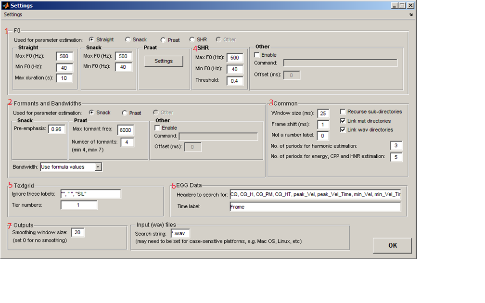
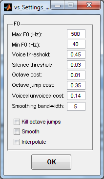
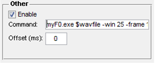

This section of the manual covers the Settings controls in VoiceSauce.
The Settings window is divided up into many sections.

The first of the sections corresponds to F0. In this section are parameters for F0 estimation. This is important because VoiceSauce uses pitch tracks to estimate harmonic locations.
By default, harmonic locations are estimated using the Straight pitch track. VoiceSauce can also calculate these locations using the Snack, Praat or SHR pitch track, or through another pitch tracking algorithm (Other). This is done by selecting the respective radio button.
It is possible to control the parameters used in the pitch tracking algorithms by looking at the corresponding sub-sections:
For Straight and Snack, the Max F0 (Hz): field specifies an upper F0 estimation limit, and the Min F0 (Hz): field specifies a lower F0 estimation limit. Candidates not within the range of these two frequencies will be ignored. The Straight section also allows the user to alter the Max duration (s):, which controls how much of a sound file Straight processes at a single time. This is needed because Straight uses a lot of memory, and for extremely long files, it is possible for Matlab to run out of memory. So, if a file was 60 s long, setting Max duration to 20 s would mean the first 20 s get processed, followed by the next 20 s, and so on. The entire file is processed, but in three chunks of 20 s.
Newer versions of VoiceSauce allow for parameter estimation through the Praat pitch track. Access to Praat's parameters is gained by clicking the Settings button. The user is then presented with a window containing numerous parameters that can be changed. These parameters control the recruitment of candidates.
|  |
|
For a more in-depth look at how these parameters affect the pitch tracking, please refer to Praat's manual. | ||
Please look at the Other section of this manual for a guide to using user-defined algorithms for calculating F0.
The second section is the Formants and bandwidths section, which controls the parameters used for formant analysis and correction.
As with F0 and harmonics, the user can control which algorithm will be used in formant analysis. Here, there are three options – the Snack algorithm, Praat's formant analysis, or a user-defined algorithm (Other). This can be changed by clicking on the respective radio button.
The Snack sub-section gives the user control over the Pre-emphasis value used by Snack. By default, this is set to 0.96.
The Praat sub-section gives the user control over the frequency range and number of formants to be found in it. (Currently this number must be an integer; the next version of VoiceSauce should include non-integer options.)
The Bandwidth toggle controls what estimate of the formant bandwidths is used in correcting the harmonic amplitudes for formant influences. By default, this is "Use formula values", meaning that the bandwidths are estimatedfrom their frequencies by a formula from Hawks & Miller (1995). If toggled to "Use estimated values", then the values calculated by VoiceSauce will be used - either from Snack or from Praat, whichever has been selected for formant analysis.
Please look at the Other section at the bottom of this manual for a guide to using user-defined algorithms for calculating formants.
The common section can be found in the middle, to the right of the formants section. This section contains miscellaneous options that are used by many parts of VoiceSauce.
This small section contains parameters for subharmonic to harmonic ratio calculations.
The Textgrid section tells VoiceSauce where to look for segment labels in associated textgrids.
The EGG Data section lists the options relevant for uploading EGG data into VoiceSauce.
VoiceSauce will search through the EGG data files when creating output files.
The Outputs section has only one option – Smoothing window size, which controls the width of the smoothing window.
The Input (wav) files section specifies the file format name. VoiceSauce can only analyze wav files, but non-PC users may need to specify, if their system is case-sensitive, *.wav or *.WAV.
VoiceSauce allows users to save and load modified settings for easier access in the future. This is useful in eliminating the need to retype in the parameters each time VoiceSauce is started.
To do this, click on the Settings menu button at the top left of the Settings window. To save settings, choose Save... and specify the path and name for the settings file to save. To load settings, choose Load... and specify the path and the name of the file to settings file to load.
To apply the changes to the parameters and to close the Settings window, simply click the OK button at the bottom.
The Other panels of the F0 and Formants sections are typically grayed out. They can be activated (and then selected) if the Enabled box if checked. Selecting Other tells VoiceSauce to calculate data using an external program. These programs can use either the same algorithms that are currently used by VoiceSauce, or new algorithms not found in VoiceSauce.
Using an external program for data analysis requires a command line to be entered in the Command field. For example, suppose you want to use a new F0 program called F0.exe which takes in a .wav (myvoice.wav) along with a bunch of parameters and outputs a results file (output.txt). To run this program, you would usually type:
VoiceSauce operates in batch mode, capable of operating on a large number of files at once. Instead of typing this line over and over again, VoiceSauce simplifies this process by plugging in the target files into each iteration of this command for you. It therefore needs to know where in the command line to plug in the wavefiles and results files. This is done by using the placeholders $wavfile and $outfile. The command to type in the Command field in this example would be:
myF0.exe $wavfile -win 25 -frame 10 -parameter1 red $outfile |
 |
The Offset (ms) field tells VoiceSauce where in the sound file to begin the user specified algorithm.